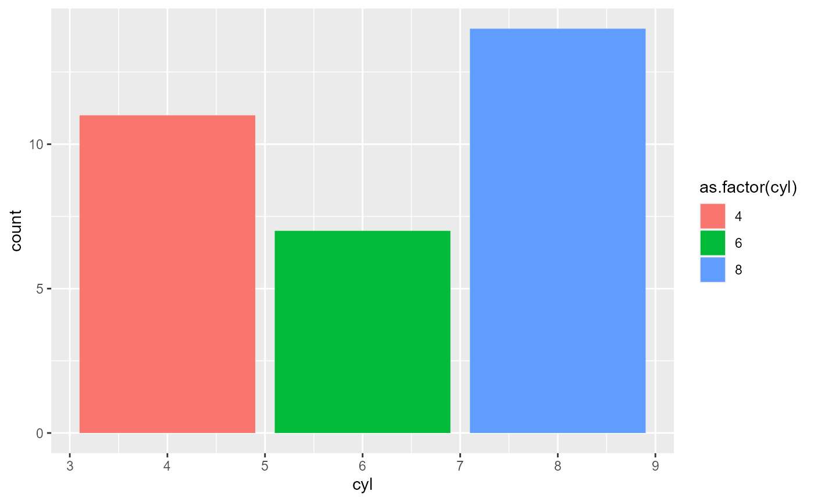
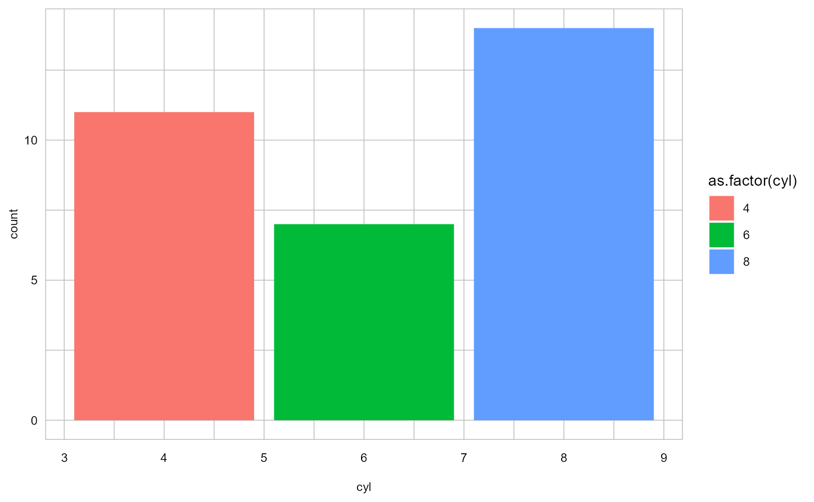
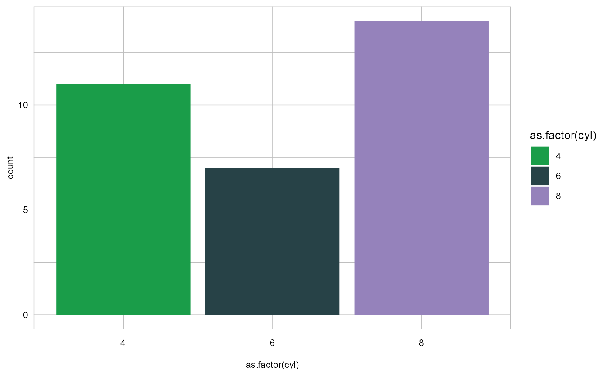
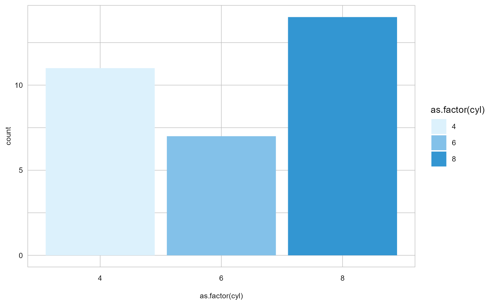
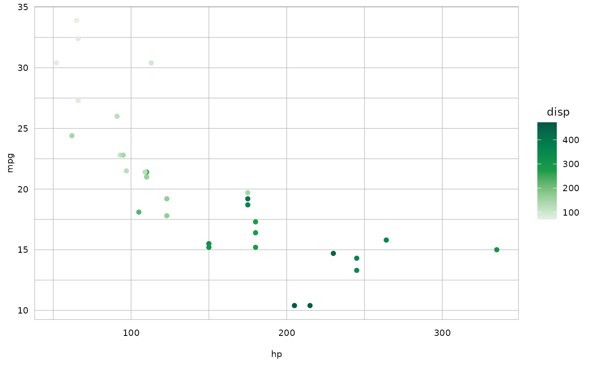

SSB ggplot theme
Susie Jentoft
2022-12-19
vignette_SSB_theme.RmdVisualisering med ggplot
R-pakken ggplot er et populær verktøy for visualisering
av data. Det er utrolig mange forskjellige type figurer som kan lages.
Her skal vi bruke ggplot et datasett som heter
mtcars for å vise noen visualisering med ggplot. Vi starter
med å lage en stolpediagram som et eksempel:
## Warning: package 'ggplot2' was built under R version 4.2.2
Bruk av theme_ssb
Vi har laget et tema (theme) for SSB for ggplot som
heter theme_ssb. Dette er tilgjengelig i
fellesr
pakken. Theme endre bakgrunn farge, font og tekst størrelse til å
ligne på det vi publiserer i notat og dokument-serie. Merk at fargene på
stolpene ikke endres!

Endre til SSB farge i figurer
For å endre fargene i en figur har vi laget noen SSB funksjoner som
fungere med ggplot.
Kategoriske data - scale_fill_ssb()
Vi kan endre til SSB farger ved bruk av
scale_fill_ssb()
ggplot(mtcars, aes(x=as.factor(cyl), fill=as.factor(cyl) )) +
geom_bar( ) +
scale_fill_ssb() +
theme_ssb()
Vi kan spesifisere fargevalg inn i `scale_fill_ssb() funksjonen. Velg mellom: ‘main’ (default), ‘greens’, ‘blues’, ‘primary’, ‘secondary’, ‘shade1’, ‘shade2’,‘shade3’, ‘shade4’, eller ‘shade5’.
ggplot(mtcars, aes(x=as.factor(cyl), fill=as.factor(cyl) )) +
geom_bar( ) +
scale_fill_ssb('blues') +
theme_ssb()
Numeriske data - scale_color_ssb()
For kontinuous numeriske data kan vi bruke
scale_color_ssb() for å endre farger. For example
ggplot(mtcars, aes(x=hp, y=mpg, color=disp)) +
geom_point( ) +
scale_colour_ssb('greens') +
theme_ssb()
Mer
Det er mulig å spesifisere farger enda mer. For mer detaljer og eksempeler om hvordan å hente ut SSB farge fra KLASS ser dokumentasjon om SSB fargepalett